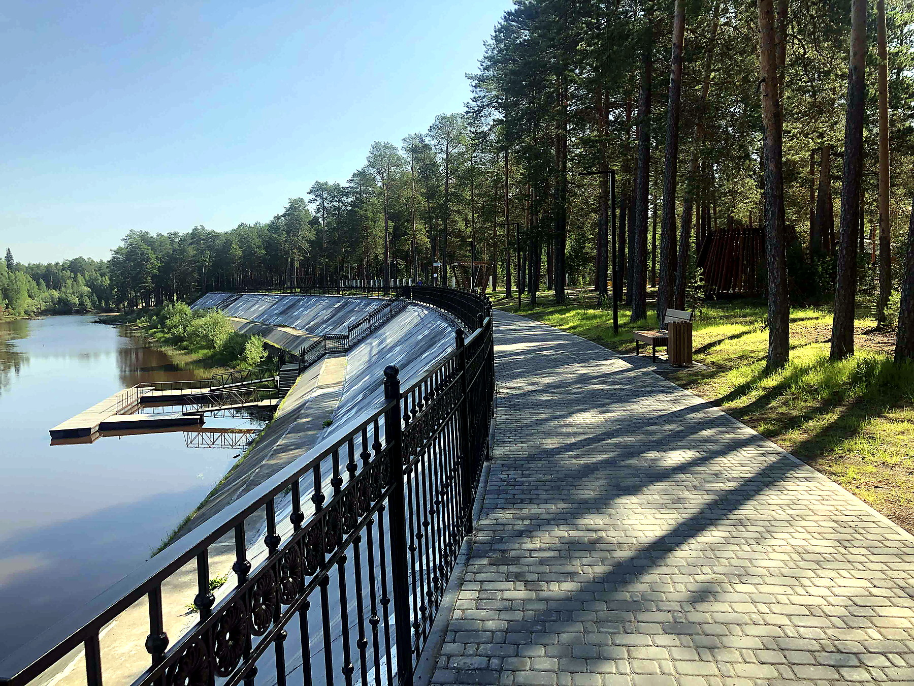

Ночной Когалым
Лучшие места для вечерних прогулок и северной атмосферы.
Смотреть местаКогалым · Югра · северный городской портал
Премиальный портал о жизни Когалыма: маршруты, места, события и лучшие адреса для жителей и гостей города.
Лучшие места для вечерних прогулок и северной атмосферы.
Смотреть местаКонцерты, выставки, фестивали и события Когалыма.
Открыть афишуГотовые маршруты с Яндекс-картой и точками остановок.
Выбрать маршрут
Место памяти и гордости
⌖
События, концерты, творчество
▣
Прогулки и красивый вид
≋
Север, нефть и характер
⌾
Атмосфера северного города
✦Собрали маршруты, места, афишу и объявления в одном городском портале. Быстро, понятно, без лишнего шума.
Подробнее о городеГлавная сцена · 19:00
Набережная · 13:00
Парк Победы · 20:30